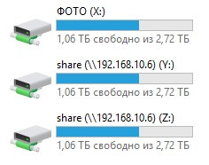

Как правильно использовать net use?
Сделал bat-файл для подключения сетевых дисков:
@ECHO OFF
net use * /delete /yes
net use x: \\192.168.10.6\фото-видео /user:admin admin /Persistent:Yes
net use y: \\192.168.10.6\share /Persistent:Yes
net use z: \\192.168.10.6\students /Persistent:Yes
получилось то, что на скрине:

Отсюда несколько вопросов:
1. диск x: имеет название "ФОТО". Откуда он его взял? Почему не "фото-видео (\\192.168.10.6\)"
2. диски y: и z: называются одинаково, но ведут в разные папки. Почему? как сделать разные названия - "share" и "students" соответственно?
@Moskus
Ответ очень простой.
Потому что название диска никак не связано с тем, какой до него путь. Оно связано с тем, какое имя вы дали этому общему ресурсу, когда вы его создавали на том хосте, где он расположен. Скриншот их WinXP, но принципиальной разницы нет.
Вот если вы там вместо share (по умолчанию) напишете что-то другое, оно будет отображаться иначе, чем сейчас.
@drsmoll
Можно так:
Dim oShell, objFSO, WshNetwork
Set oShell = CreateObject("Shell.Application")
Set objFSO = CreateObject("Scripting.FileSystemObject")
Set WshNetwork = CreateObject("WScript.Network")
MapDrv "Z:", "\\server\share","Share description", "username", "password" 'Буква диска, путь с шаре, описание
Function MapDrv(DrvLet, UNCPath, DrvName, Uname, Upass)
If objFSO.DriveExists(DrvLet) Then
WshNetwork.RemoveNetworkDrive DrvLet, true, true
End If
Wscript.Sleep 1000
WshNetwork.MapNetworkDrive DrvLet, UNCPath, false, Uname, Upass
oShell.NameSpace(DrvLet).Self.Name = DrvName
End Function
UPD: Если ничего не напутал
Syntax
objNetwork.MapNetworkDrive(strLocalDrive, strRemoteShare, [persistent], [strUser], [strPassword])
@Francyz
net use - не может давать псевдонимы подключаемым дискам. У вас просто прописывается сетевой пусть и назначается буква. Чтобы отображалось другое имя, его нужно указывать в свойствах шары.
Либо подключать диски через GPO там есть возможность указывать как будет отображаться данная папка/диск/ярлык.